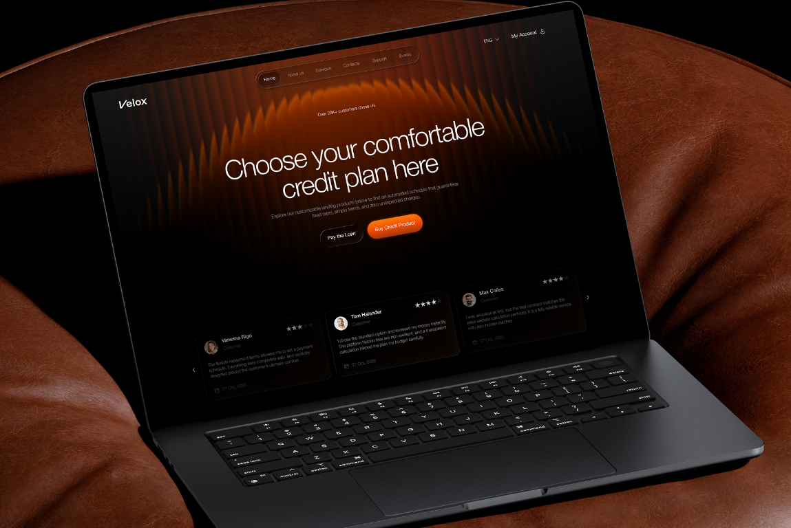
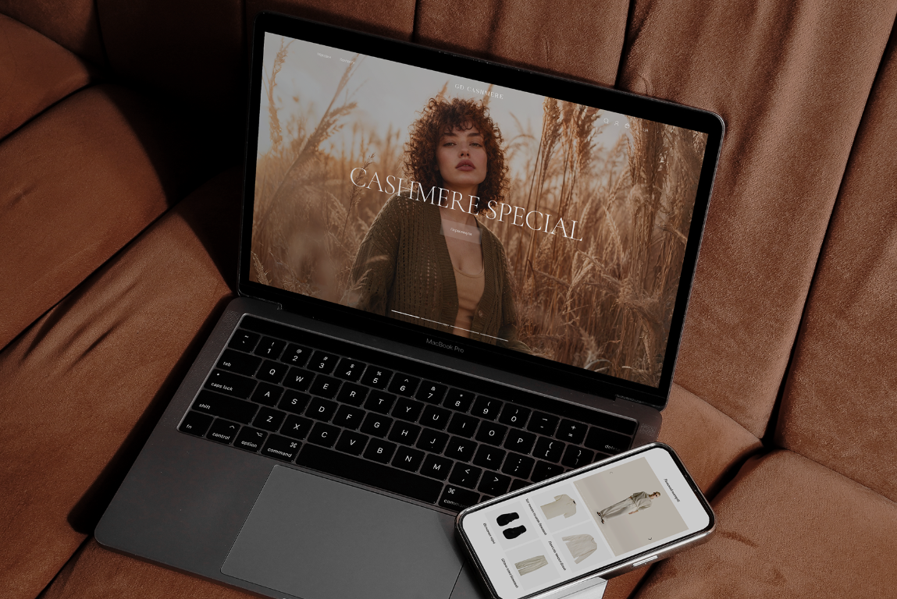
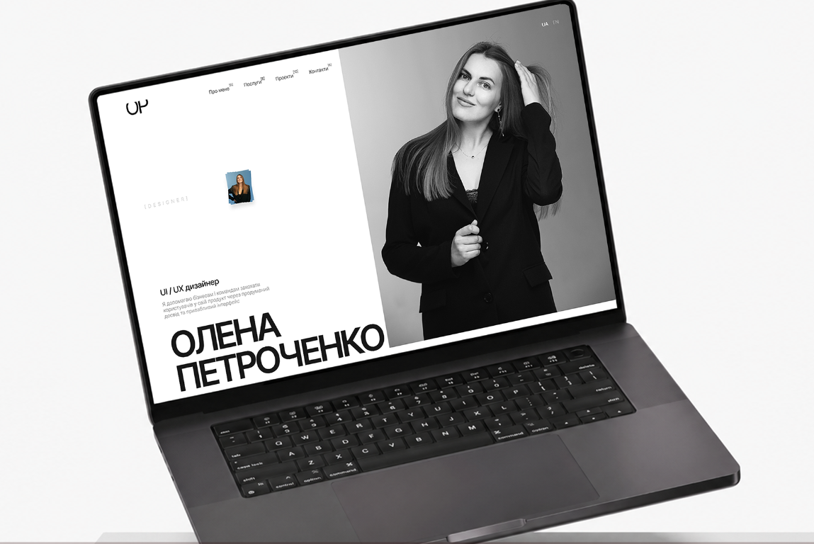
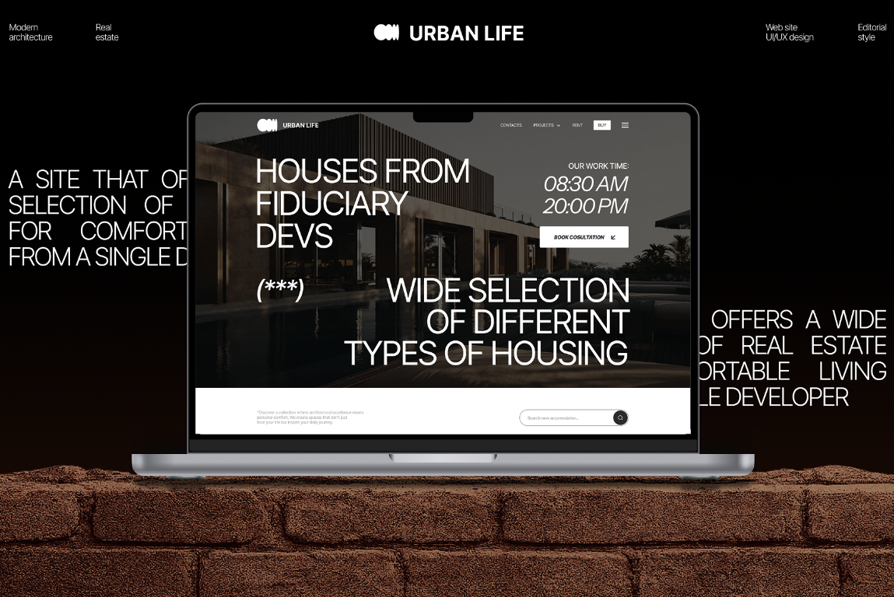

VELOX
Velox is a website operating on a B2B/B2C basis to provide credit services and sell ready-made credit products.
Open to work
Here you will find a collection of my projects — including desktop websites, mobile versions, apps, and software — presented as a portfolio with detailed descriptions and explanations.

Velox is a website operating on a B2B/B2C basis to provide credit services and sell ready-made credit products.

A full-scale redesign of a premium clothing website. It required improved usability and the creation of a luxury brand feel.

Personal website for a Senior UI/UX Designer, offering design services, mentoring and consulting.

This is my first UI/UX training project. Urbanlife is a company that sells and rents out various types of real estate.